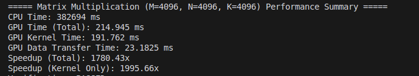
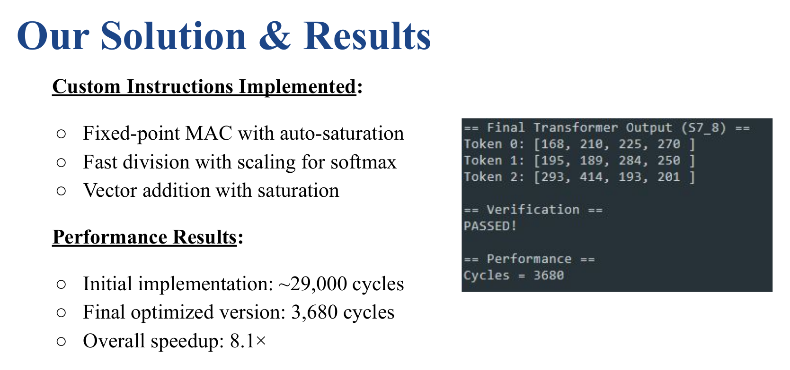

Projects
RL-Based Quadruped and Humanoid Control
Developed PPO-based reinforcement learning pipelines using MJX and Brax for learning locomotion in quadrupeds and humanoids. Built robust checkpointing, parallelized training, and evaluation tools to analyze stability and performance.


- Built PPO pipelines in JAX + Brax with checkpointing and evaluation
- Integrated with MJX physics simulation
- Generated video/HTML visualizations for policy testing
CUDA GPU Programming Portfolio
A suite of CUDA-accelerated programs built for high-performance computing experiments. Implemented low-level GPU kernels and benchmarked performance against SIMD-optimized CPU versions (AVX2/SSE).

- Custom CUDA kernels for matrix ops, softmax, image filters
- Memory coalescing, shared memory tuning, and kernel optimization
- Achieved up to 73× speedup over CPU baseline
Visual Navigation & 3D Mapping
Developed a monocular visual navigation game with SLAM-like behavior. Integrated camera and IMU data for real-world TurtleBot3 mapping and tested with multiple sensors including 360° camera and LiDAR.

- Feature-based navigation using SIFT and OpenCV
- SLAM-based mapping with IMU + LiDAR integration
- Adapted for TurtleBot3 with ROS-based deployment
Hardware-Software Co-Design for RISC-V
Built a 5-stage pipelined, cycle-accurate RISC-V simulator in Python. Designed custom RISC-V instructions for Transformer acceleration, and achieved 8× speedup through hardware-software optimization.

- Implemented hazard resolution using forwarding/stalling
- Added MAC, softmax, and saturating vector ops
- Accelerated Transformer inference in simulation